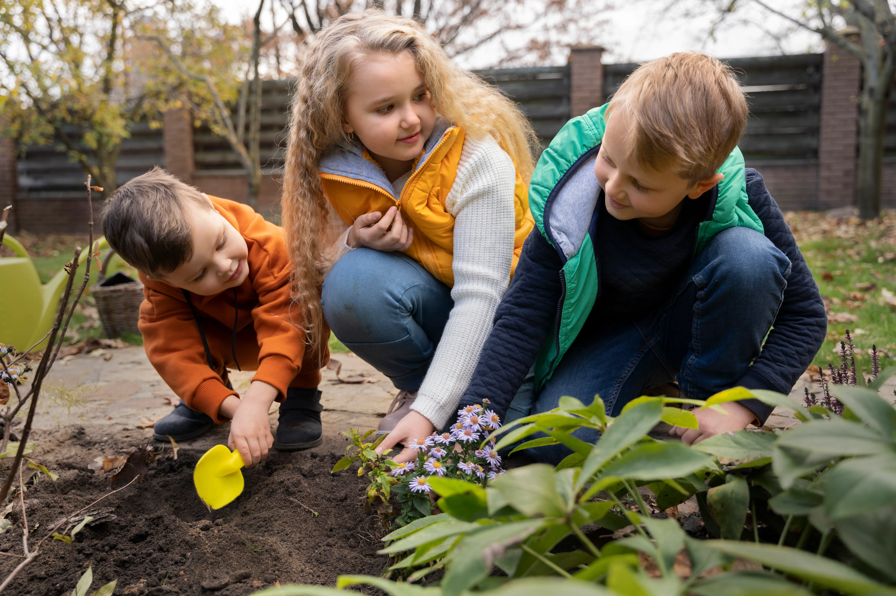
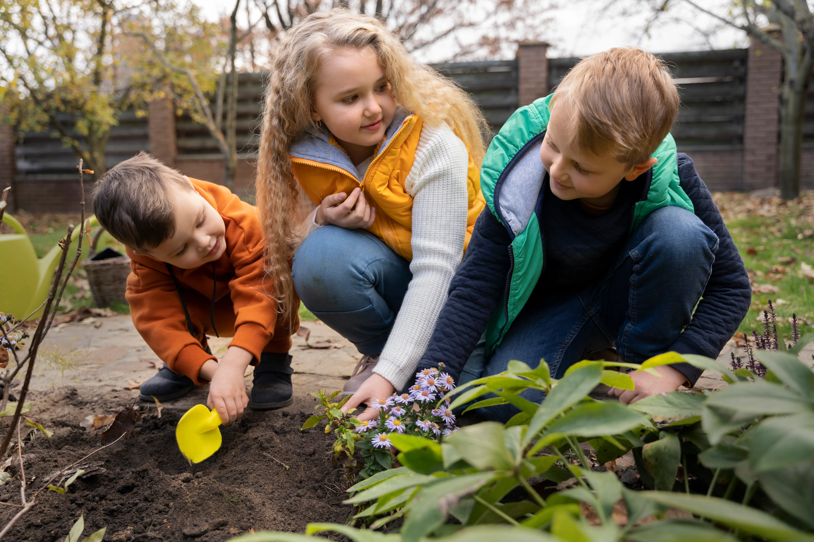

Sobre o Projeto
Neste projeto, os alunos do Jardim II puderam colocar as mãos na terra! Aprendemos sobre o ciclo de vida das plantas, a importância da água e como cuidar do nosso meio ambiente. Cada aluno plantou uma semente e acompanhou o crescimento diário.
A experiência ajudou a desenvolver a paciência e o cuidado com a natureza, além de incentivar a alimentação saudável, já que colhemos e provamos nossas próprias hortaliças.